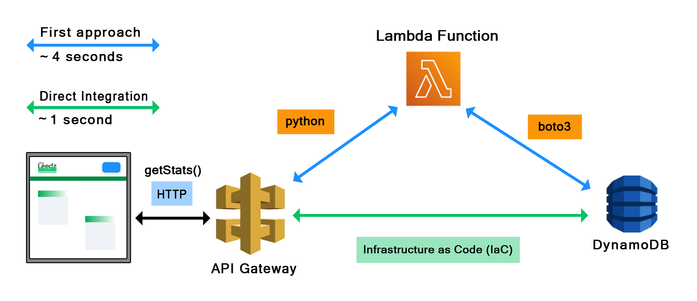
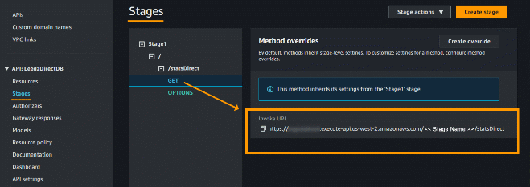

|
May, 2024
Optimize
Your Web App with API Gateway Direct Integration
Scott Gross
Overview
The
front page of theleedz.com combines static html and
images with javascript elements served by an HTTP request to AWS
API Gateway. The return data populates several stats
windows which show among other things, the most recent leedz posted
and sold. In the original
/getStats implementation the round-trip took about four
seconds. The culprit was the python Lambda function, which had to be
started cold on each (sadly infrequent) hit to the website. This
paper shows how to skip the Lambda function and pass a GetItem
request directly from API Gateway to DynamoDB, an approach called
Direct Integration.
The
Problem
The
most common approach to building AWS apps involves integrating API
Gateway with Lambda functions containing your business logic and
other services. The Leedz API works that way. The original /getStats
would spin up a python instance and run a Lambda function, use boto3
to connect to DynamoDB and perform a single GetItem.
The resulting key-value pairs, about 200 characters of JSON,
are passed back to the client without further formatting. This
process was taking about four seconds end-to-end because the website
gets infrequent traffic and python is always starting up cold.
I
explored various caching and timeout strategies but none were
satisfactory. The performance problem wasn't the static html or
images, but the stats values which could be changed at any time and
needed to be queried fresh. Even if I integrated a serverless cache
for this one row of data, and redirected my client or API Gateway to
it, the cache would have to be updated every time an even occurred in
the system – which meant rewriting a lot of simple, working
code.
Direct
Integration
The
solution for the Leedz is a Direct Integration between API
Gateway and DynamoDB without the need for a Lambda function. Because
getStats.py is not doing any business logic or data
formatting, the DB request and response handling can all be specified
using templates in the AWS Console GUI. AWS supports this
Infrastructure as Code to link resources together using
configuration tools and JSON files instead of custom glue code. No
new python process is started, and the request/response are not
marshaled back and forth between APIs. The result is a much faster
round-trip.
 How
I Did It
Below
is an outline of the steps I followed to directly integrate my
/getStats and /getTrades functions. Your needs may differ, but the
steps below should remain the same whether you're getting or putting
data. AWS makes it easy to experiment, and if you get cold feet at
any time you can quickly delete everything and start over.
Create New
IAM Policy
Attach
IAM Role to Policy
Create
REST API
Integrate
Request
Integrate
Response
Deploy
and Test
1.
New IAM Policy Create
a new IAM Policy that authorizes the connection to DynamoDB and the
specific operation being performed.
Go
to your IAM Dashboard → Create Policy.
Enter
'dynamoDB' in the search window or choose from the list. In the
Actions Allowed enter 'get' and select the GetItem
checkbox or whatever DB actions your app requires. Click Add
ARNs to connect the policy to your specific DB table. Find the
table ARN at
DynamoDB
→ your table → General Information → Additional Info
Restrict
the resources to your database ARN. Add more permissions if
required. Then click Next. On the next screen you can review
all the Resources in the policy and the actions permitted. Give the
policy a name and description and Create Policy
2.
Attach IAM Role to Policy In
the left-column of the IAM main
console, click Roles. Create
a Role. Enter 'API
Gateway' in the Service or use case dialog.
Click Next. You'll
see that AmazonAPIGatewayPushToCloudWatchLogs
is attached to the role by default. Click Create Role.
We still need to attach the new Policy we just created with the DB integration to the new Role.
Click Add Permissions → Attach policies. Find the new policy in the dropdown. It's Type is 'Customer managed' and not 'AWS managed' so you can sort the list and find it quickly. On the Summary page you'll see the new Policy attached to the Role.
Copy
the Role ARN from the
Summary section for use in the next step.
3.
Create REST API
This
step is key. There are two types of APIs in API Gateway: REST
and HTTP . REST supports
Direct Integration with DynamoDB – HTTP does not. So you'll
need to create a REST API just for the new direct calls. The
client-side Javascript will send an HTTP request the same as before,
just to a different endpoint. Go to the API Gateway
console and click
Create API → REST API → BUILD
In
the next dialog with the New API radio button selected, click
Create API. Then Create resource.
In
the Resource details, deselect 'Proxy resource', choose a path
name for the new function, and click ON the CORS checkbox.
Next,
configure the new API to accept HTTP GET requests for /statsDirect,
like the original API did for /getStats, Click Create
Method.
On
the Method Details screen integrate the API Gateway GET
method with the DynamoDB GetItem, just like in the Lambda
function. Use your own AWS Region and copy the Role ARN
from above into the Execution role. The other values are
essential, especially POST for the HTTP method (to DyanmoDB).
Click
Create method and go back to the method configuration page.
You'll now see console options for :
Integration
Request
Set
Content handling to Passthrough. Request body
passthrough should be set to Never so that the raw HTTP
request body won't get passed to DynamoDB.
Instead
we will use Mapping Templates to handle the transformation of
the request and response data between API Gateway and the DB.
The Content type is application/json. Generate an Empty template and copy the JSON below into the Template body. This is Infrastructure as Code, the actual DB request formalized in JSON instead of a Lambda function.
Your
JSON will vary depending on request type, i.e. a Scan or Query
instead of a GetItem.
Integration Response Back on the main Resources console, with the radio button for your GET method selected, click Enable CORS to get a pop-up dialog.
In the Enable CORS dialog, click the GET check box for Access-Control-Allow-Methods and enter * for the value of Access-Control-Allow-Origin.
Click Save to continue.
4. Deploy and Test
API
Gateway returns the raw DynamoDB output where the value for each key
is itself a one-element dictionary { Type : Value } and the
Type is a one-letter code, N for Number and S for
String. Your Lambda function might normally filter, sort and format
the output before returning. This logic will now have to be done
entirely on the client in Javascript. Consider that, especially the
filtering component, before committing to the direct integration and
changing your client. Returning large data sets back over HTTP may
entirely negate your performance improvement from bypassing Lambda in
the first place.
Click
Deploy API and choose a Stage. You're taken to the
Stages console. Expand the tree to your GET method.
Copy the Invoke URL and paste that into your browser window
for one more test.
 That's the URL your Javascript will call. Note again the format of the returned data and how your client handles it.
Below
is the code I use to convert the raw trades data returned in the Test
above direct from DynamoDB into an array of dictionaries [ { sk:
<trade name>, nl: <number of leedz> }, …. ] sorted
by 'nl'.
Looking
Forward
The original goal of the Direct Integration project was to speed up the stats page that users see before they log into theleedz.com. So far I've integrated the stats and trades. Both went from four seconds to almost instantaneous – one second or less. The results are so dramatic that I've made a list of other functions to re-engineer in the main workflow of the app. The list of DynamoDB actions that can be called from the REST API includes put and update operations. A future project would include mapping incoming data from the client into the JSON mapping template to inform those database operations.
+Scott Gross theleedz.com@gmail.com theleedz.com
|